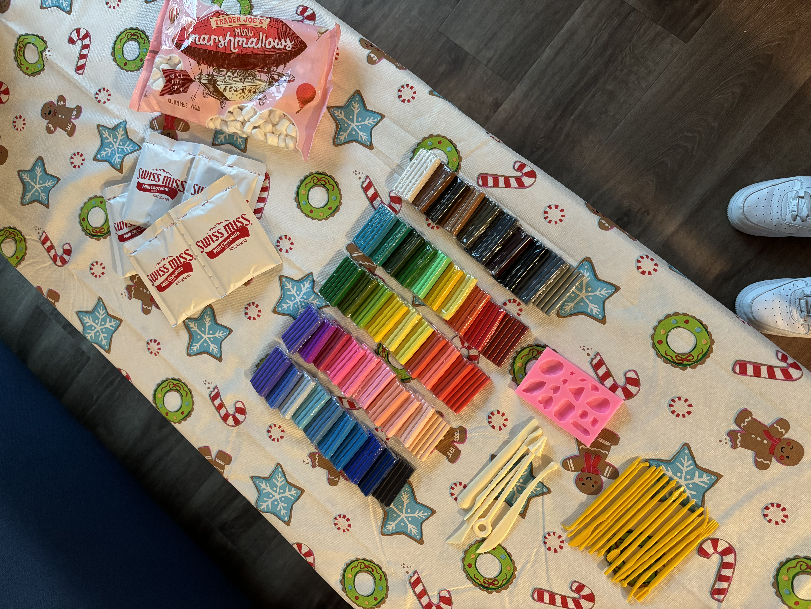

about me
a few of the things that make life outside of engineering fun :)



currently...
reading
the da vinci code
listening
changes by justin bieber
watching
(rewatching) gilmore girls
learning
how to do my own nails